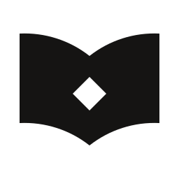

B2 · جسد واحد: دراسة الألوان
حبر ونقطة حمراء
حبر المصحف البني الداكن، والنقطة بالحُمرة كنقط أبي الأسود في المصاحف الأولى.
#F5EFE3#2A2320#C2412Dزمردي ونقطة حمراء
أخضر أفتح وأحيا من الحالي، والنقطة الحمراء تكسر الصورة النمطية «أخضر وذهبي».
#1F6F5C#F7F2E7#D9503A#C2412Dحبر أزرق وذهبي
كحلي عميق يوحي بالعلمية والدقة، مع نقطة ذهبية هادئة.

#1E2B3A#F4EFE4#D2A84E#B88A2Eزمردي وذهبي
الأقرب لثيم التطبيق الحالي بعد تفتيح الأخضر.

#F5EFE3#1F6F5C#C9A24Bأحادي فاخر
أسود دافئ وكريمي فقط؛ النقطة فتحة. أقصى بساطة، والتميز من الشكل وحده.


#151413#F5EFE3